目標設定を効果的にサポートするAIエージェント
GPTsを開く：目標設定を効果的にサポートするAIエージェントMARKETING CONSULTANT | DATAMANAGER | AI CREATOR
Hayato Uchida内田 隼人
- IT、新規事業、RESEARCH、ANALYTICS、CRMを経験
- データ・テクノロジーの経験を活かし、顧客体験の向上を目的としたCUSTOMER DATA PLATFORMを構築するプロジェクトを牽引。
- 生成AIを活用し企業のデジタルマーケティングやDXを支援するAIイノベーション推進室を設立。
- 一般社団法人生成AI活用普及協会（GUGA）の協議員として活動。
- 2025年3月、株式会社電通デジタル入社。2026年2月、国内電通グループのAI開発センターへ参画。
- 2026年4月より、エージェントマネジメントリーダーとしてAI For Growth Marketing Agentsの開発を推進。
- ITSIER
- PET SUPPLIES
RETAIL - NEW
BUSINESS - OPT
- DENTSU
DIGITAL
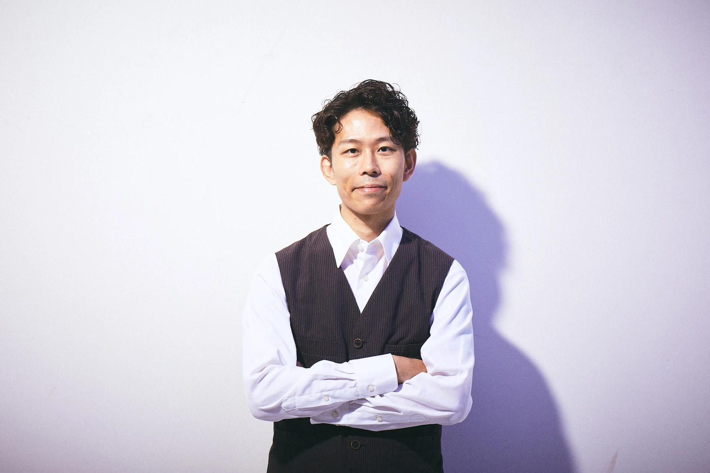
Works
～2026dentsu Japan AIセンター 統合AIエージェント構築
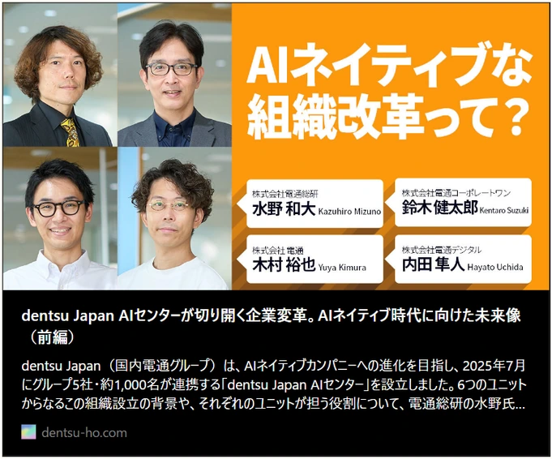
dentsu Japan AIセンター ユニット３リーダーとして、dentsu Japan のAIソリューションを統合するAIエージェント基盤を開発。
マーケティング・テクノロジーフェア東京 2026 特別講演登壇
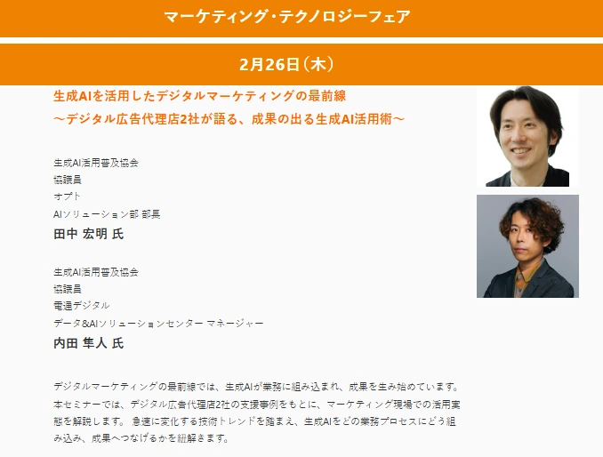
Works
～2024株式会社ジンズ様のCustomer Data platform構築
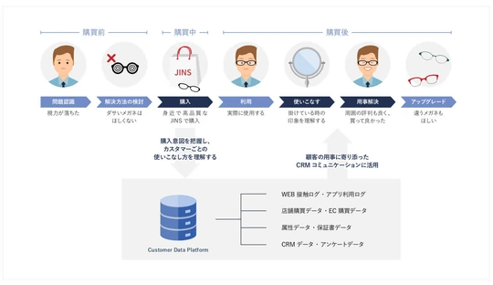
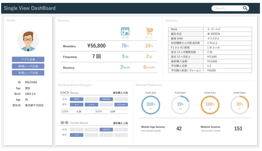
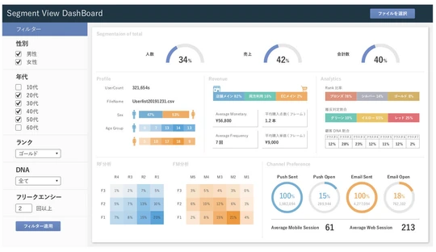
株式会社オンワードパーソナルスタイル様のcustomer Data platform構築
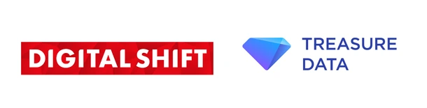
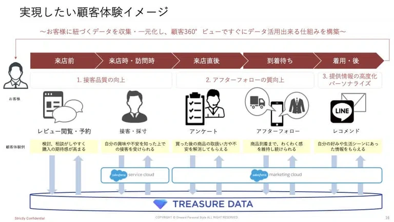
「Treasure Data CDP」の導入およびデジタルマーケティング支援体制を強化。
オンワードパーソナルスタイルなどの企業に対し、顧客データの統合と連携したマーケティングコミュニケーションの設計・構築を支援。
標準化されたCDP「CX BASE」の提供開始
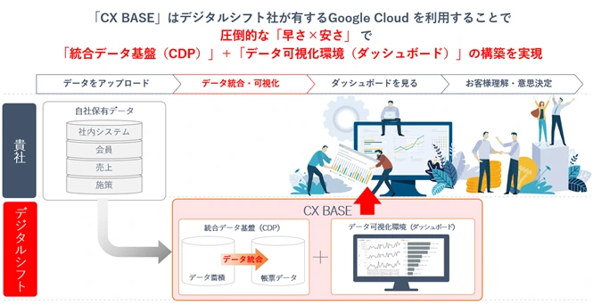
データ統合・データ可視化を実現する環境構築パッケージサービス「CX BASE」を提供開始。企業のCX改善を支援。
生成AIの推進 AIイノベーション推進室設立 GUGA協議員参画
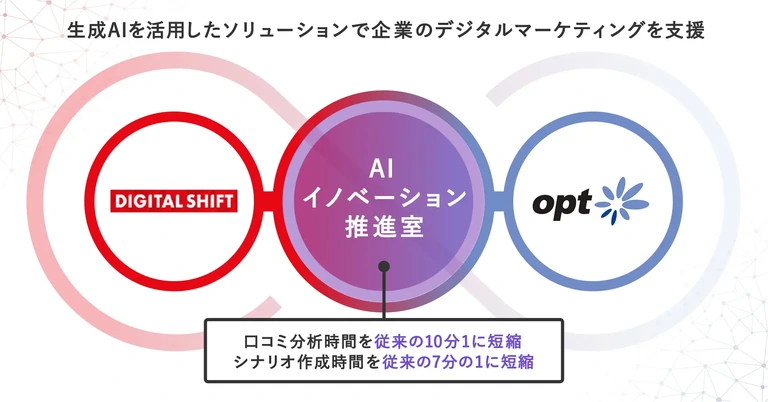
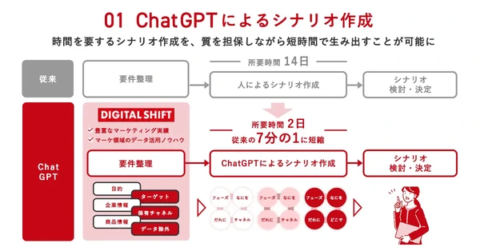
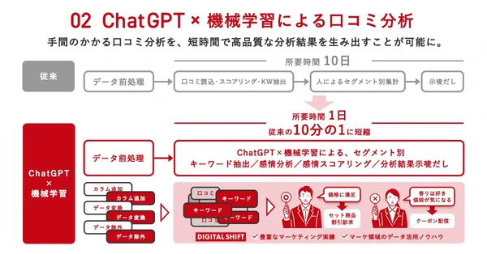
ChatGPTを活用したデジタルマーケティングを支援するAIイノベーション推進室を設立。
マーケット領域で活用できるChatGPTを使ったプロダクトアイデアを競う、『ChatGPTソン』を開催。
生成AI普及活用協会（GUGA）協議員に参画し、生成AIの社内外の教育と推進を担当。
AI Works
～2025StoryMaker
あらゆるものにストーリーを与える
アップロードされた「たった一枚の画像」から
潜在的な魅力を言語化し世界観を構築
映像シナリオの構成、絵コンテの作成、
そして最終的な動画生成まで
物語を紡ぐストーリーメイカー
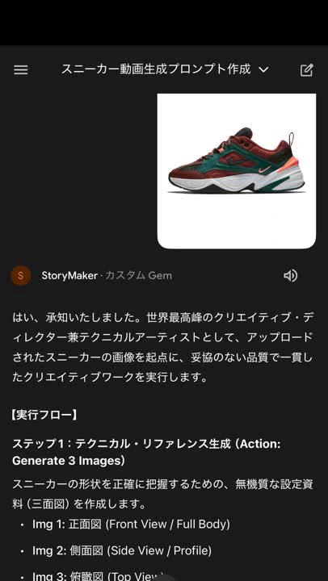
UNITE Roulette
毎日のユナイトに、予測不能なワクワクを。
ポケモンユナイトのピックやレーン選択に「偶然」の要素を取り入れることで、日々のプレイにおけるマンネリを解消し、新しい楽しみ方を発見するための戦術ルーレット
タイプ/地方/バトルスタイルといったテーマごとのルーレットシステムに加え、最新の大会データやメタデータを取り入れ、今日の相棒を決める運命をルーレットです。
※AIを用いたポケモンユナイトのファンアプリ制作
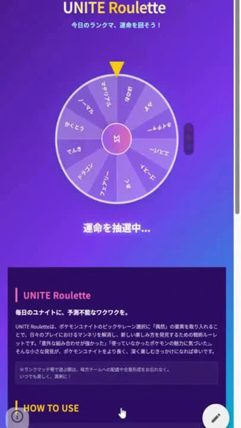
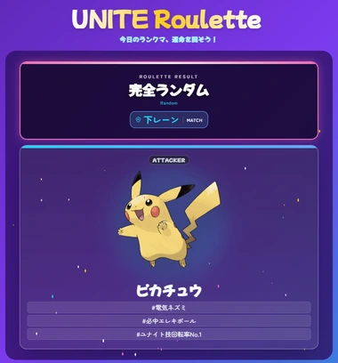
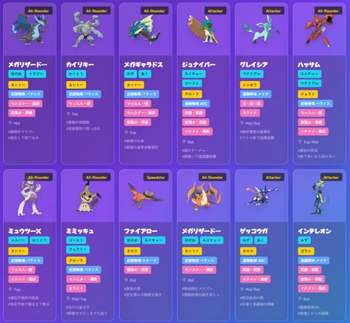
AI Works
～2024GPTs作品集 1
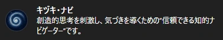
常識に囚われない、新たな気づきを提供する「キヅキ・ナビ」
GPTsを開く：常識に囚われない、新たな気づきを提供する「キヅキ・ナビ」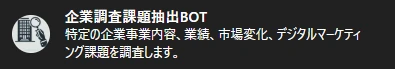
特定の企業事業内容、業績、市場変化、デジマ課題を調査
GPTsを開く：特定の企業事業内容、業績、市場変化、デジマ課題を調査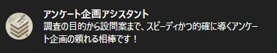
アンケートの調査設計を手伝います！
GPTsを開く：アンケートの調査設計を手伝います！プロフェッショナルな思考を持ったAIコピーライター
GPTsを開く：プロフェッショナルな思考を持ったAIコピーライター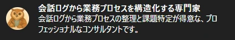
会話ログから課題を的確に整理します。
GPTsを開く：会話ログから課題を的確に整理します。GPTs作品集 2
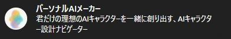
あなたの理想をカタチにする、パートナーAIをクリエイト
GPTsを開く：あなたの理想をカタチにする、パートナーAIをクリエイト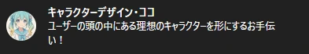
キャラクターデザイン提案からプロンプト作成支援
GPTsを開く：キャラクターデザイン提案からプロンプト作成支援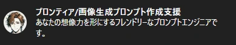
イメージを“言葉”で描き出すプロンプト職人
GPTsを開く：イメージを“言葉”で描き出すプロンプト職人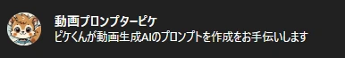
動画アイデアを楽しく引き出し創作していきます
GPTsを開く：動画アイデアを楽しく引き出し創作していきますクリエイティブのコンセプト設計からお手伝い
GPTsを開く：クリエイティブのコンセプト設計からお手伝い物語の核心を視覚化し、心を揺さぶる情景へ
GPTsを開く：物語の核心を視覚化し、心を揺さぶる情景へ空間と心の「余白」を大切にするインテリア提案
GPTsを開く：空間と心の「余白」を大切にするインテリア提案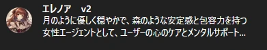
月の光のように静かに森のように深く心に寄り添う
GPTsを開く：月の光のように静かに森のように深く心に寄り添うAI Creative
～2024 nano banana登場以前商業施設のキャンペーンクリエイティブ
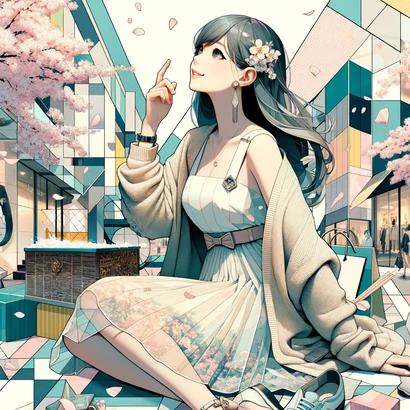
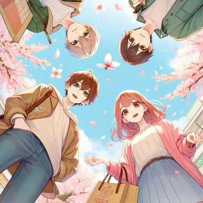
商業施設運営企業様：画像生成AI活用の取り組みで生成AIを活用したバナーのCTRが34%向上し、該当企業におけるクリエイティブTIPS集を作成
制作時のプロンプトを見る（原文）
1.Imagine an abstract modern collage featuring a central hopeful female figure sitting in a pose looking up at the sky. The illustration is in a modern anime style with a stylish young Japanese woman as the central character, dressed in contemporary, chic attire suitable for a shopping park setting. Her outfit, a spring- inspired dress with subtle floral accents and a light cardigan, complemented with trendy accessories, showcases her youthful and fashion-forward attitude. The collage represents an abstract interpretation of a modern shopping park, with geometric shapes and a pastel color palette conveying modernity and leisure. Elements of the shopping park, such as fashion items, are present and contrast with the surreal composition. Cherry blossoms are artistically incorporated, with petals dancing softly around them, creating a vibrant and lively atmosphere that celebrates the essence of spring. The overall impression is an inviting and vibrant pop and pastel environment full of new seasonal energy. The collage mimics the flatness of the style to maintain focus on the characters and their unique arrangement. 2.An anime-style illustration for a spring event announcement at a shopping park targeted at young people. This unique perspective looks up from below at three young individuals enjoying their shopping experience, emphasizing a simple yet concept-focused composition. The characters are vibrant and pop, embodying a clean and positive atmosphere that heralds the new season. The setting is alive with fluttering cherry blossoms and budding trees, evoking the warmth and renewal of spring. The color palette is dominated by soft pastels, featuring gentle pinks, greens, and the blue of the sky, capturing the quintessence of spring. This illustration aims to convey the excitement and freshness of the season, inviting young people to participate in the shopping park's spring event from a dynamic and engaging perspective. 4.A bright and lively Valentine's Day themed background for a shopping mall campaign banner. The image features a pastel color palette creating a warm and bright atmosphere. In the center, a large red heart-shaped balloon dominates, surrounded by a silhouette of a couple holding hands. Scattered around them are small gift boxes and ribbons, enhancing the romantic elements of Valentine's Day. The design is simple but effectively highlights the theme.
猫のキャラクターデザイン
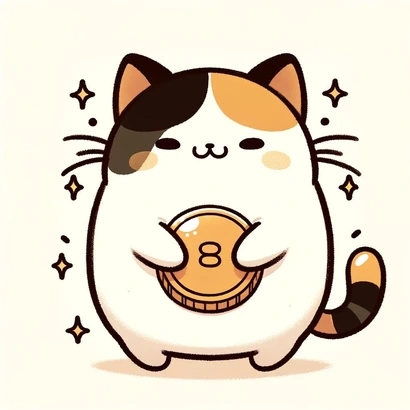
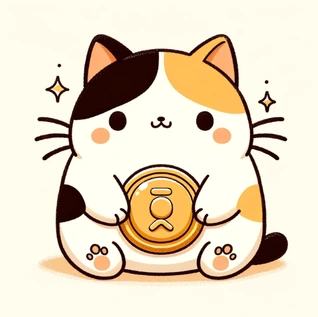
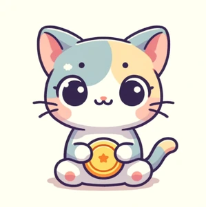
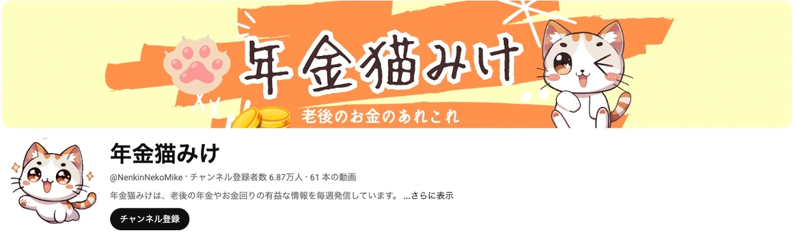
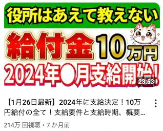
キャラクターデザイン1 ／ Youtubeチャンネルの猫キャラクターデザイン
制作時のプロンプトを見る（原文）
1.Create a minimalist, cartoon-style illustration of a cute and chubby calico cat with simple, bold black outlines and a unique, relaxed, and quirky vibe. The character has a round, slightly imperfect face with small, triangular ears and a white muzzle. The cat has a relaxed and neutral expression with small black dots for eyes and a simple line for a mouth. Short black lines are used for the whiskers. The body is round and slightly asymmetrical, with short arms ending in rounded paws. The cat is holding a large Japanese oval gold coin with both paws, and more Japanese oval gold coins are stacked around it, suggesting prosperity and abundance. The background is plain white, giving the image a gentle and warm atmosphere. Additionally, small sparkles are scattered around the cat, adding a touch of magic to the scene. 2.A minimalist cartoon-style illustration of three cute, chubby cats with simple, thick black outlines and a unique, relaxed, quirky vibe. The characters have round, slightly imperfect faces with small triangular ears and white snout tips. The cats have a relaxed, neutral look with small black dot eyes and mouths drawn with simple lines. Short black lines are used for the whiskers. Their bodies are round and slightly asymmetrical with short arms ending in round paws. The first cat is a brown tabby. The second, middle cat is a calico cat. The third cat is a brown tabby. The cats are holding a large Japanese oval gold coin in both paws with even more oval coins stacked around them, suggesting prosperity and abundance. The background is plain white, giving the image a calm, warm atmosphere. Additionally, small glitter is scattered around the cats, adding a touch of magic to the scene.
商品紹介画像のバリエーション生成
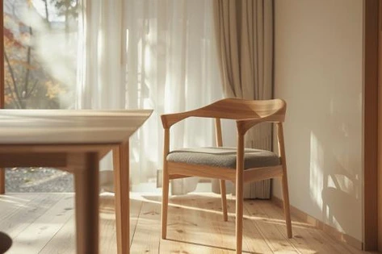
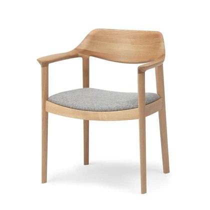
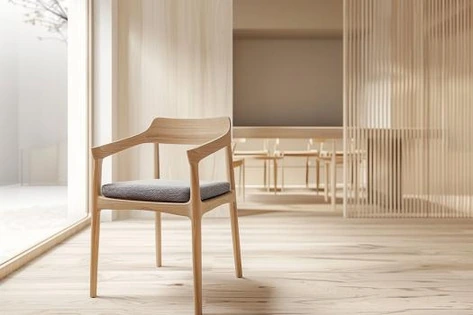
プロダクト画像を元に商品紹介画像のバリエーション生成
写真から広がるアート
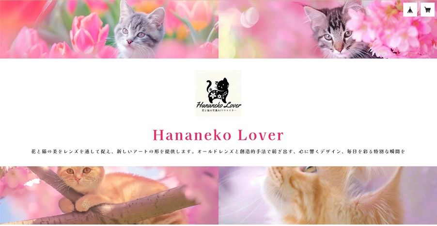
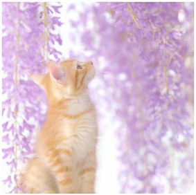
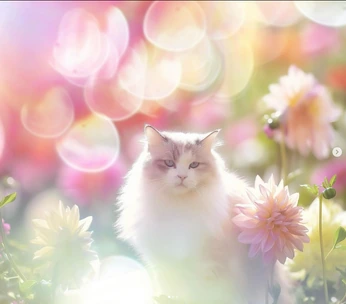
オールドレンズの花写真と猫を題材にしたアート画像生成